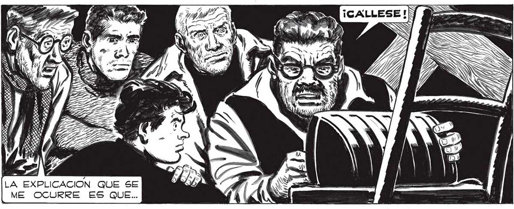
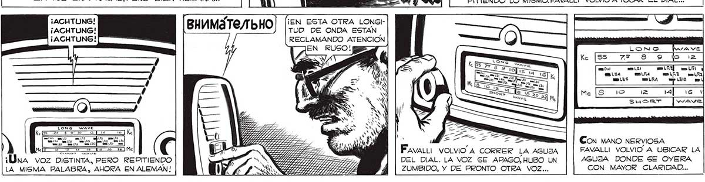

318 — LL LA EXPLICACION QUE SE ME OCURRE ES QUE... ¡ATENTION! ¡ATENTION! ¡ATENTION! ¡ACHTUNG! ¡ACHTUNG! ¡ACHTUNG! NAAA ¡Úna voz DISTINTA, PERO REPITIENDO LA MISMA PALABRA, AHORA EN ALEMAN! ¡ATENTION! ¡ESTA PIDIENDO ATEN¡ATENTION! CION EN FRANCES! ¡ATENTION! ¡EN ESTA OTRA LONGITUD DE ONDA ESTAN RECLAMANDO ATENCION esa GS 7 TEA CSIPRR LIZ /A IPP RD SIRAR ARA TAS, 22 . LIBARDO E LRR AAA A RRRRAS ¡ME PARECIO OÍR UNA PALABRA! |, .. S SM A in ¡ATENTION! ¡ ATENTION! ¡ATENTION! 4 Y E] mm LR ha Le Mz a y OUR E e Ls a 7 a aa po Ss Pava VOLVIO A CORRER LA AGUJA DEL DIAL. LA VOZ SE APAGO, HUBO UN ZUMBIDO, Y DE PRONTO OTRA VOZ... % Y Ú 5 Sy A TORA Y L. dh LA AGUJA DEL DIAL FUE Y VINO, CASI EN EL MISMO LUGAR.DE PRONTO... Durante UN LARGO INSTANTE LA VOZ SIGUIO REPITIENDO LO MISMO.FAVALLI VOLVIO A TOCAR EL DIAL... S IN Sl, TESSA o 10/99 p Y) , SS E ? É Y / JT ev ; gn > 27720 Ñ y IESO o y IS A VS 0 ve A MAN A. SS LA Lil COn MANO NERVIOSA FAVALLI VOLVIO A UBICAR LA AGUJA DONDE SE OYERA CON MAYOR CLARIDAD...

